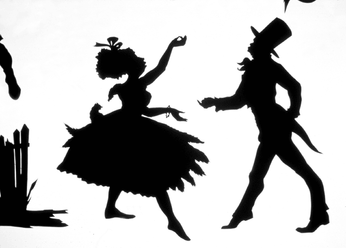

Who is this artist?
Walker is best known for her panoramic friezes of cut-paper silhouettes, usually black figures against a white wall, which address the history of American slavery and racism through violent and unsettling imagery.[She has also produced works in gouache, watercolor, video animation, shadow puppets, "magic-lantern" projections, as well as large-scale sculptural installations like her ambitious public exhibition with Creative Time called A Subtlety (2014). The black and white silhouettes confront the realities of history, while also using the stereotypes from the era of slavery to relate to persistent modern-day concerns. Her exploration of American racism can be applied to other countries and cultures regarding relations between race and gender, and reminds us of the power of art to defy conventions.
She first came to the art world's attention in 1994 with her mural Gone, An Historical Romance of a Civil War as It Occurred Between the Dusky Thighs of One Young Negress and Her Heart. This cut-paper silhouette mural, presenting an old-timey south filled with sex and slavery was an instant hit. At the age of 27, she became the second youngest recipient of the John D. and Catherine T. MacArthur Foundation’s “genius” grant,second only to renowned Mayanist David Stuart. In 2007, the Walker Art Center exhibition Kara Walker: My Complement, My Oppressor, My Enemy, My Love was the artist’s first full-scale U.S. museum survey. Walker currently lives in New York, where she has been a professor of visual arts in the MFA program at Columbia University since 2001.
